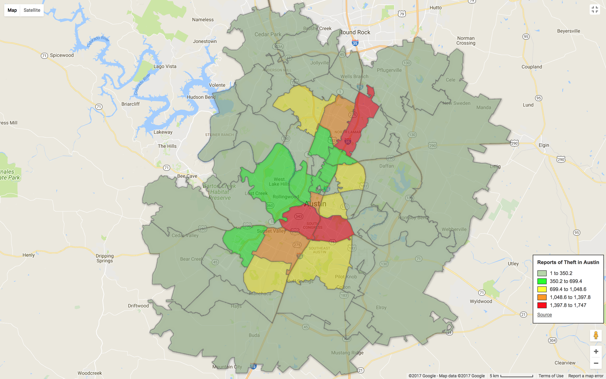
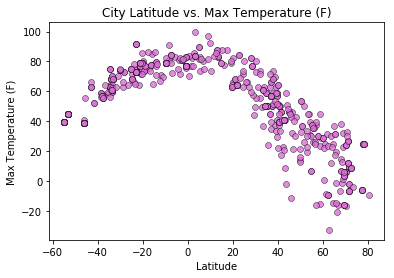
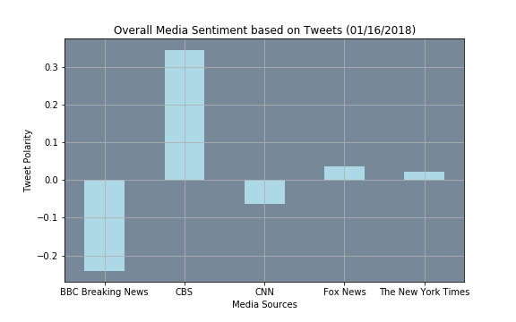

Portfolio
Data Analysis and Visualization
Austin Crime Analysis
Our goal was to take an in-depth analysis into the crimes occurring in Austin, Texas. In addition to the overall crime spread of our city, we wanted to discover correlations between the Travis County zip codes and the demographics behind the crimes.
Languages and Tools Used:
Yelp API, Google Fusion Tables, Python3, MatPlotLib, Seaborn, Pandas/Jupyter Notebook
Weather vs. Latitude
In this analysis, I was interested in different analyses of cities and their location near the equator. After generating random latitudes and longitudes for 600 cities, I utilized the Open Weather Map API to get current temperature, cloudiness, humidity, and windspeed. This data was then analyzed to determine correlation, if any, between these observations and the city's location near the equator.
Languages and Tools Used:
Open Weather Map API, Python, Google API, Matplotlib, Citypy
Analysis with VADER and Tweepy
With the use of the Twitter API and Python script, I pulled 100 of the most recent tweets from BBC, CBS, CNN, Fox, and New York Times. After collecting the text/data, I performed a VADER Sentiment Analysis to determine the compund, positive, neutral, and negative scoring for each tweet.
Languages and Tools Used:
Tweepy, VADER Sentiment Analysis, Python, Matplotlib
HTML and CSS
Website I made
Paragraph or summary of the website
Another Website
Summary of website
Last Website
Summary of website